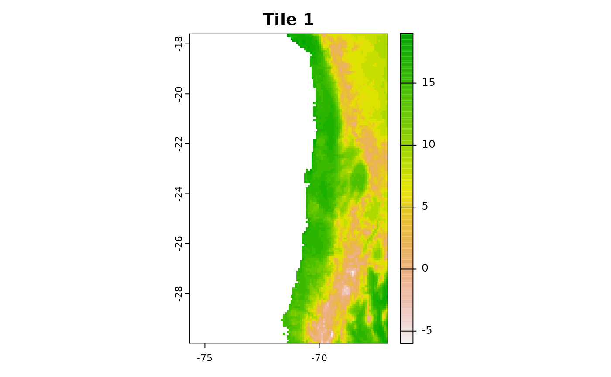
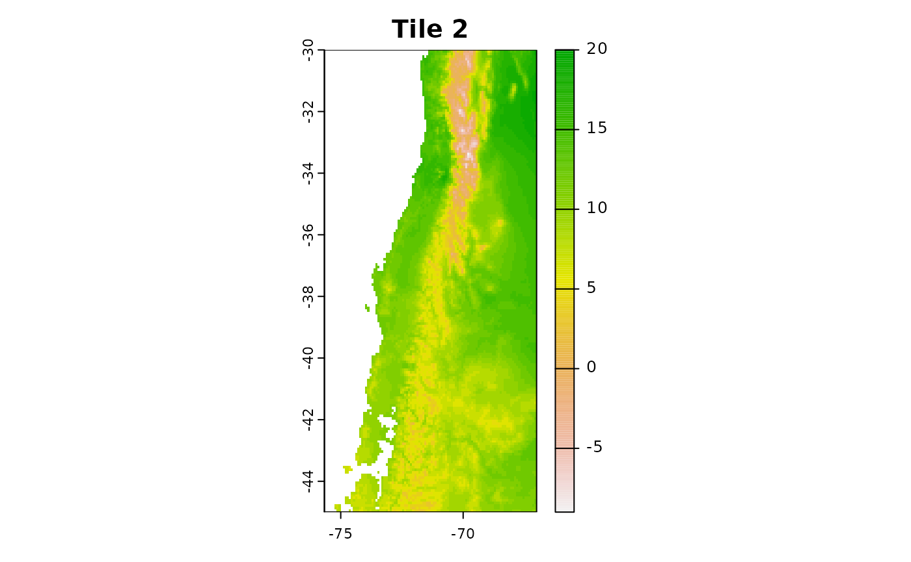
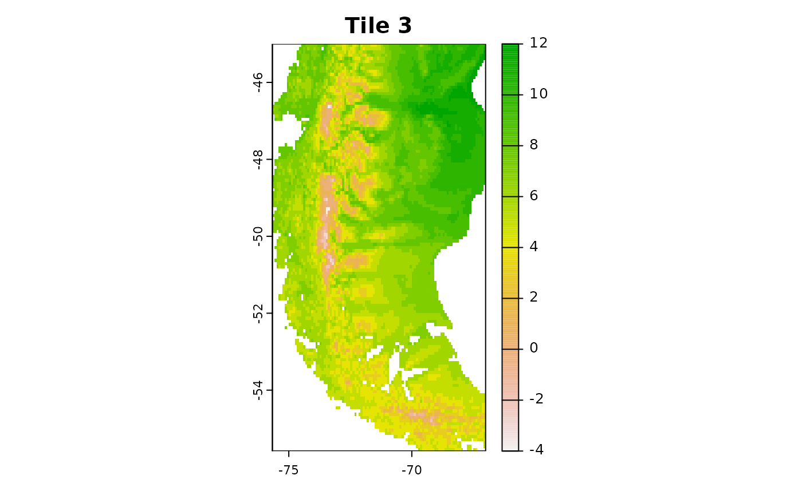
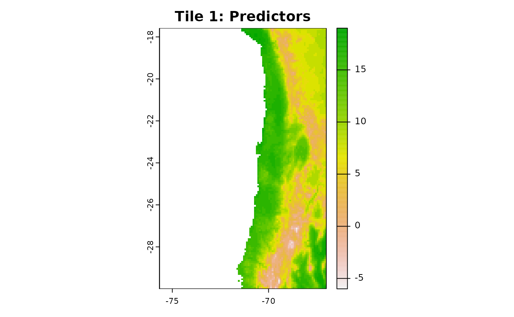
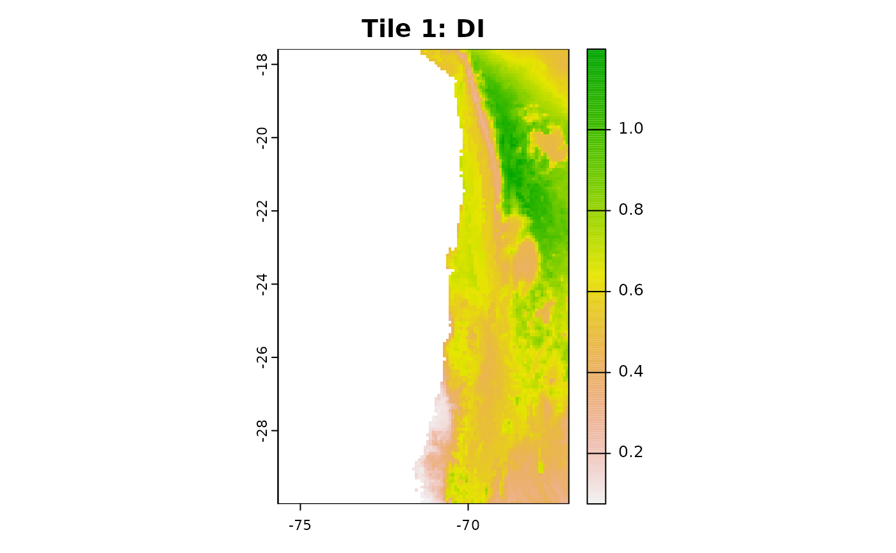
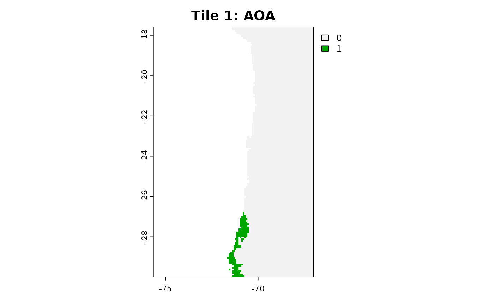
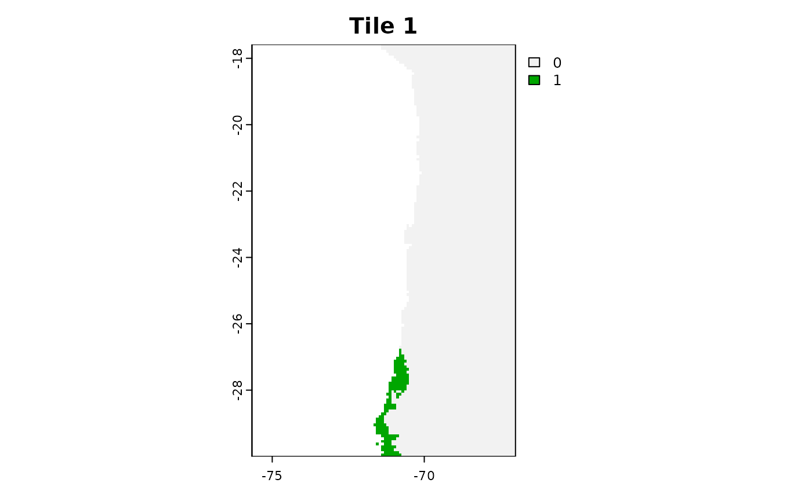
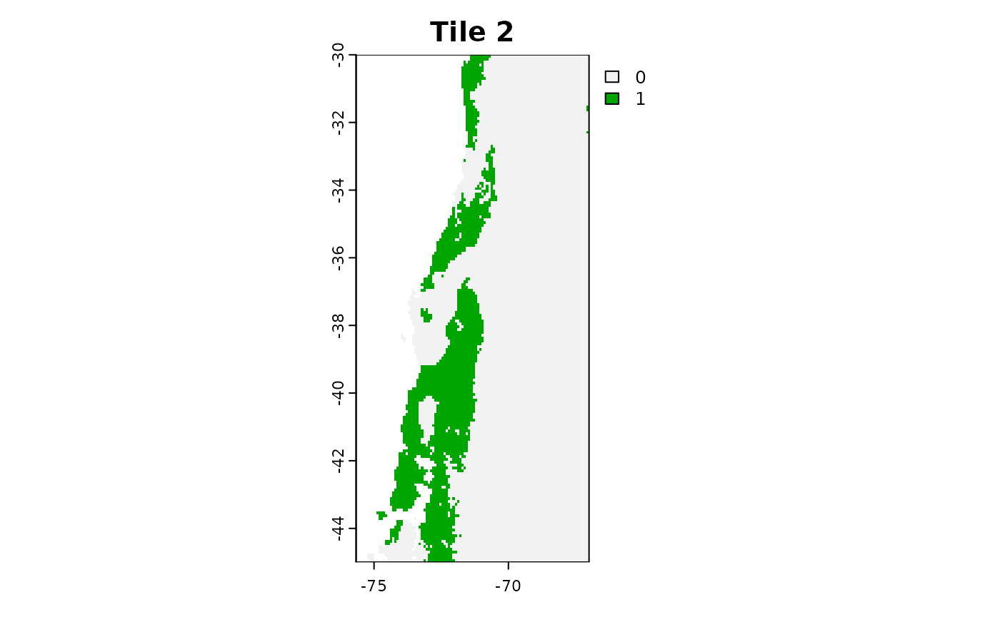
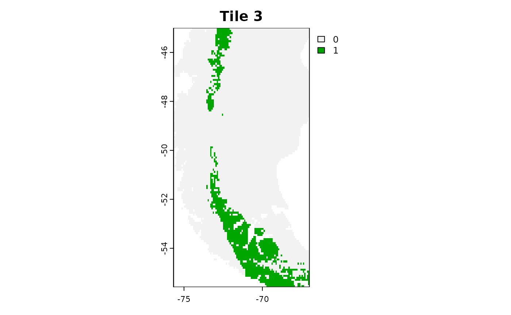

3. AOA in Parallel
Marvin Ludwig
2024-03-13
Source:vignettes/cast03-AOA-parallel.Rmd
cast03-AOA-parallel.RmdEstimating the Area of Applicability (AOA) can be computationally intensive, depending on the amount of training data used for a model as well as the amount of new data the AOA has to be computed. This vignette goes over the possibility to (partly) compute the AOA in parallel. We will use the same data setup as the vignette “Area of applicability of spatial prediction models”. Please have a look there for a general introduction to the AOA and the details about the example data generation.
Generate Example Data
data("splotdata")
predictors <- rast(system.file("extdata","predictors_chile.tif",package="CAST"))
splotdata <- st_drop_geometry(splotdata)
set.seed(10)
model_random <- train(splotdata[,names(predictors)],
splotdata$Species_richness,
method="rf",
importance=TRUE,
ntrees = 50,
trControl = trainControl(method="cv"))
prediction_random <- predict(predictors,model_random,na.rm=TRUE)Parallel AOA by dividing the new data
For better performances, it is recommended to compute the AOA in two
steps. First, the DI of training data and the resulting DI threshold is
computed from the model or training data with the function
trainDI. The result from trainDI is usually the first step
of the aoa function, however it can be skipped by providing
the trainDI object in the function call. This makes it possible to
compute the AOA on multiple raster tiles at once (e.g. on different
cores). This is especially useful for very large prediction areas,
e.g. in global mapping.
model_random_trainDI = trainDI(model_random)## | | | 0% | | | 1% | |= | 1% | |= | 2% | |== | 2% | |== | 3% | |== | 4% | |=== | 4% | |=== | 5% | |==== | 5% | |==== | 6% | |===== | 7% | |===== | 8% | |====== | 8% | |====== | 9% | |======= | 9% | |======= | 10% | |======= | 11% | |======== | 11% | |======== | 12% | |========= | 12% | |========= | 13% | |========= | 14% | |========== | 14% | |========== | 15% | |=========== | 15% | |=========== | 16% | |============ | 17% | |============ | 18% | |============= | 18% | |============= | 19% | |============== | 19% | |============== | 20% | |============== | 21% | |=============== | 21% | |=============== | 22% | |================ | 22% | |================ | 23% | |================= | 24% | |================= | 25% | |================== | 25% | |================== | 26% | |=================== | 26% | |=================== | 27% | |=================== | 28% | |==================== | 28% | |==================== | 29% | |===================== | 29% | |===================== | 30% | |===================== | 31% | |====================== | 31% | |====================== | 32% | |======================= | 32% | |======================= | 33% | |======================= | 34% | |======================== | 34% | |======================== | 35% | |========================= | 35% | |========================= | 36% | |========================== | 37% | |========================== | 38% | |=========================== | 38% | |=========================== | 39% | |============================ | 39% | |============================ | 40% | |============================ | 41% | |============================= | 41% | |============================= | 42% | |============================== | 42% | |============================== | 43% | |============================== | 44% | |=============================== | 44% | |=============================== | 45% | |================================ | 45% | |================================ | 46% | |================================= | 47% | |================================= | 48% | |================================== | 48% | |================================== | 49% | |=================================== | 49% | |=================================== | 50% | |=================================== | 51% | |==================================== | 51% | |==================================== | 52% | |===================================== | 52% | |===================================== | 53% | |====================================== | 54% | |====================================== | 55% | |======================================= | 55% | |======================================= | 56% | |======================================== | 56% | |======================================== | 57% | |======================================== | 58% | |========================================= | 58% | |========================================= | 59% | |========================================== | 59% | |========================================== | 60% | |========================================== | 61% | |=========================================== | 61% | |=========================================== | 62% | |============================================ | 62% | |============================================ | 63% | |============================================= | 64% | |============================================= | 65% | |============================================== | 65% | |============================================== | 66% | |=============================================== | 66% | |=============================================== | 67% | |=============================================== | 68% | |================================================ | 68% | |================================================ | 69% | |================================================= | 69% | |================================================= | 70% | |================================================= | 71% | |================================================== | 71% | |================================================== | 72% | |=================================================== | 72% | |=================================================== | 73% | |=================================================== | 74% | |==================================================== | 74% | |==================================================== | 75% | |===================================================== | 75% | |===================================================== | 76% | |====================================================== | 77% | |====================================================== | 78% | |======================================================= | 78% | |======================================================= | 79% | |======================================================== | 79% | |======================================================== | 80% | |======================================================== | 81% | |========================================================= | 81% | |========================================================= | 82% | |========================================================== | 82% | |========================================================== | 83% | |=========================================================== | 84% | |=========================================================== | 85% | |============================================================ | 85% | |============================================================ | 86% | |============================================================= | 86% | |============================================================= | 87% | |============================================================= | 88% | |============================================================== | 88% | |============================================================== | 89% | |=============================================================== | 89% | |=============================================================== | 90% | |=============================================================== | 91% | |================================================================ | 91% | |================================================================ | 92% | |================================================================= | 92% | |================================================================= | 93% | |================================================================== | 94% | |================================================================== | 95% | |=================================================================== | 95% | |=================================================================== | 96% | |==================================================================== | 96% | |==================================================================== | 97% | |==================================================================== | 98% | |===================================================================== | 98% | |===================================================================== | 99% | |======================================================================| 99% | |======================================================================| 100%
print(model_random_trainDI)## DI of 703 observation
## Predictors: bio_1 bio_4 bio_5 bio_6 bio_8 bio_9 bio_12 bio_13 bio_14 bio_15 elev
##
## AOA Threshold: 0.1941761
saveRDS(model_random_trainDI, "path/to/file")If you have a large raster, you divide it into multiple smaller tiles and apply the trainDI object afterwards to each tile.
r1 = crop(predictors, c(-75.66667, -67, -30, -17.58333))
r2 = crop(predictors, c(-75.66667, -67, -45, -30))
r3 = crop(predictors, c(-75.66667, -67, -55.58333, -45))
plot(r1[[1]],main = "Tile 1")
plot(r2[[1]],main = "Tile 2")
plot(r3[[1]],main = "Tile 3")
Use the trainDI argument in the aoa
function to specify, that you want to use a previously computed trainDI
object.
aoa_r1 = aoa(newdata = r1, trainDI = model_random_trainDI)
plot(r1[[1]], main = "Tile 1: Predictors")
plot(aoa_r1$DI, main = "Tile 1: DI")
plot(aoa_r1$AOA, main = "Tile 1: AOA")
You can now run the aoa function in parallel on the different tiles!
Of course you can use for favorite parallel backend for this task, here
we use mclapply from the parallel package.
library(parallel)
tiles_aoa = mclapply(list(r1, r2, r3), function(tile){
aoa(newdata = tile, trainDI = model_random_trainDI)
}, mc.cores = 3)
plot(tiles_aoa[[1]]$AOA, main = "Tile 1")
plot(tiles_aoa[[2]]$AOA, main = "Tile 2")
plot(tiles_aoa[[3]]$AOA, main = "Tile 3")
For larger tasks it might be useful to save the tiles to you hard-drive and load them one by one to avoid filling up your RAM.
# Simple Example Code for raster tiles on the hard drive
tiles = list.files("path/to/tiles", full.names = TRUE)
tiles_aoa = mclapply(tiles, function(tile){
current = terra::rast(tile)
aoa(newdata = current, trainDI = model_random_trainDI)
}, mc.cores = 3)